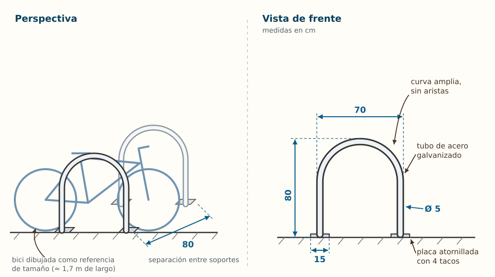
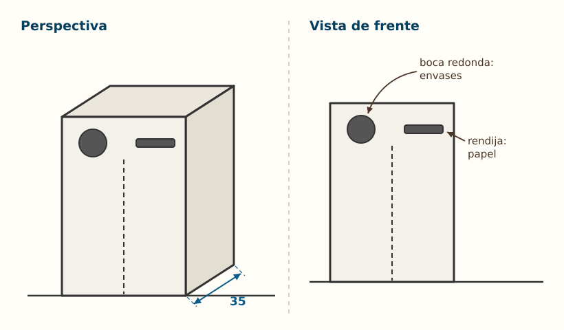

Contenido
Qué vas a hacer
Montar el dossier de propuesta: el documento donde el equipo recoge todo lo trabajado y presenta su solución. Aquí tienes su estructura, cómo hacer los bocetos y cómo convertir la idea en un plan de proyecto.
Crear la copia del dossier del equipo (una sola por equipo; se comparte entre sus integrantes).
Qué lleva el dossier
| Apartado | Contenido | De dónde sale |
|---|---|---|
| 0. El estudio | Nombre del estudio, reparto de roles y su rotación. | Primera sesión de trabajo. |
| 1. Mapa de necesidades | Tabla con las necesidades observadas (mínimo seis) y sus evidencias; matriz de decisión y necesidad elegida. | Salida de observación. |
| 2. El producto que ya existe | Resumen de las fichas de análisis individuales: qué hace bien el producto actual, qué hace mal o a quién deja fuera, y qué tendría que mejorar una propuesta nueva. | Ciclo de vida. |
| 3. Ideación | Fotos de las hojas de brainwriting, tabla SCAMPER de las tres ideas, matriz final con la idea ganadora y qué habéis aprovechado del análisis. | Técnicas de ideación. |
| 4. La propuesta | Descripción en diez líneas, bocetos, tabla de materiales y criterio de sostenibilidad y accesibilidad. | Materiales y sostenibilidad + esta página. |
| 5. Plan de proyecto | Lista de tareas que harían falta para fabricarla, con responsable y orden; captura de la diapositiva «Plan de fabricación» del tablero. | Esta página. |
| 6. Bitácora del equipo | Una entrada por sesión, con la captura del Kanban. | Todas las sesiones. |
Cómo se hace un boceto
Un boceto no es un dibujo bonito: es un dibujo que explica. Se hace a mano, rápido, y tiene que responder a «¿cómo es?» y «¿cuánto mide?». Mira primero uno terminado:

Ampliar figura (nueva pestaña)
Qué permite entender cada parte del boceto
- La perspectiva enseña la forma completa de un vistazo, y la bici dibujada al lado sirve de referencia de tamaño: se ve enseguida que el soporte llega a la altura del cuadro.
- La vista de frente lleva las medidas en centímetros: con ella alguien podría comprar el tubo y cortarlo sin preguntaros nada.
- Las anotaciones con flechas dicen lo que el dibujo no puede decir solo: el material, cómo se ancla y por qué la curva no tiene aristas.
Lo que tiene que llevar vuestro boceto:
- Al menos dos vistas: una en perspectiva (para entender la forma) y una de frente o de planta con las medidas principales en centímetros.
- Anotaciones con flechas: de qué es cada parte, cómo se une, dónde va anclado.
- Escala aproximada y una referencia de tamaño (una persona, una bici, una mano).
- Si hay varias versiones, se conservan todas y se marca la elegida: el camino también cuenta.
Consejo
Fotografía los bocetos con buena luz y de frente, recorta y pégalos en el dossier. Un boceto en papel bien hecho vale más que un dibujo digital a medias.
Actividad 8 · ¿Qué le falta a este boceto?
Este es el boceto de otro equipo, que propone una papelera doble de reciclaje para el patio. Le faltan dos cotas y una anotación para que alguien pudiera fabricarla sin preguntar. Buscadlas antes de abrir la solución, y después revisad vuestro propio boceto con la misma mirada.

Ampliar figura (nueva pestaña)
Ver la solución
Cotas que faltan: la altura total y la anchura (solo está acotada la profundidad, 35 cm, en la perspectiva). Sin ellas no se sabe si cabe junto al banco ni si llega a la altura de la mano.
Anotación que falta: de qué material es (por ejemplo, «chapa de acero galvanizado» o «madera tratada»). Sin ella no se puede pedir el material ni saber si aguanta la intemperie.
Detalle que también ayudaría: dibujar una persona o una mochila al lado como referencia de tamaño.
Del boceto al plan de proyecto
Esta propuesta no se fabrica: el plan demuestra que sería realizable. Por eso se escribe con el mismo cuidado que si fuerais a construirla mañana. Se hace en cuatro pasos:
- Descomponer la fabricación en tareas pequeñas y concretas («cortar los cuatro listones a 90 cm», no «hacer la estructura»). Entre ocho y quince tareas.
- Ordenar: qué tarea necesita que otra esté acabada antes (no se pinta antes de lijar).
- Asignar un responsable a cada tarea.
- Pasar las tareas a tarjetas en una diapositiva nueva del tablero Kanban titulada «Plan de fabricación (no se hace en esta unidad)», en el orden decidido. Así no se mezclan con las tarjetas del trabajo real del equipo.
Este es el plan del soporte en U del boceto. Fíjate en la columna «Necesita antes»: dice qué tareas tienen que estar terminadas para poder empezar cada una.
| # | Tarea | Necesita antes | Responsable | Material |
|---|---|---|---|---|
| 1 | Medir el hueco junto a la valla y contar cuántas bicis llegan | — | Coordinación | Cinta métrica |
| 2 | Dibujar el plano a escala con la posición de cada soporte | 1 | Documentación | Papel milimetrado |
| 3 | Pedir permiso al centro para anclar los soportes en el suelo | 2 | Portavocía | Plano |
| 4 | Hacer la lista de materiales y pedir presupuesto | 2 | Materiales y calidad | Plano, catálogo de una tienda |
| 5 | Comprar el tubo, las placas y los tacos | 3, 4 | Materiales y calidad | Presupuesto aprobado |
| 6 | Cortar los tubos a medida | 5 | Materiales y calidad | Tubo, sierra de metal |
| 7 | Curvar cada tubo en U | 6 | Coordinación | Curvadora de tubo |
| 8 | Soldar las placas de anclaje a cada U | 7 | Taller externo (lo coordina Portavocía) | Soldadura |
| 9 | Galvanizar o pintar con antióxido | 8 | Documentación | Pintura antióxido |
| 10 | Anclar los soportes al suelo | 3, 9 | Todo el equipo | Taladro, tacos, tornillos |
| 11 | Probar con bicis reales y ajustar la separación | 10 | Todo el equipo | Bicis |
Antes de entregar
- Los siete apartados (del 0 al 6) están, con sus fotos y tablas, y se leen sin explicación oral.
- La necesidad elegida tiene evidencias; la necesidad y la idea tienen cada una su matriz, con pesos y una razón por puntuación.
- Los bocetos tienen medidas; la tabla de materiales tiene fila de sostenibilidad y de accesibilidad.
- El plan tiene entre ocho y quince tareas concretas, cada una con lo que necesita antes y su responsable.
- La bitácora tiene una entrada por sesión.
- No hay nombres de personas ajenas al equipo ni fotos de personas.
Entrega en Moodle
Tarea Dossier de propuesta. Archivo: dossier_propuesta.pdf. Una entrega por equipo (entrega en grupo): la sube una sola persona y cuenta para todo el equipo.
El cuestionario individual
Además del dossier, cada persona responde en Moodle el Cuestionario: proyectos y ciclo de vida. Entra lo trabajado en las páginas de proyecto tecnológico, ideación, ciclo de vida y materiales. La chuleta de la unidad resume lo esencial.